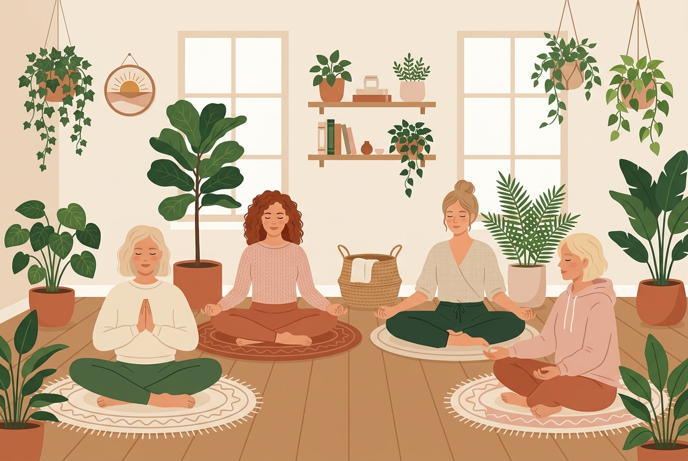
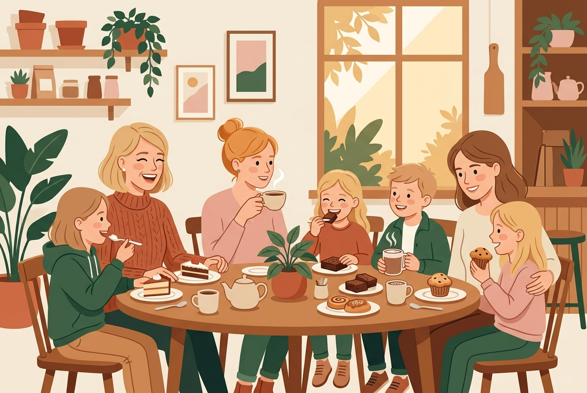
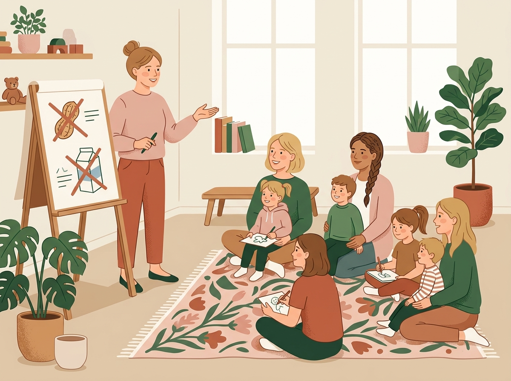

Ideen, die wir in Frankfurt anpacken wollen.
Mainhattan Mamas ist ein Netzwerk im Aufbau.
Wir entwickeln gezielte Vorhaben, die dort ansetzen, wo Familien im Alltag oft improvisieren, verzichten oder durch das Raster fallen. Auf dieser Seite stellen wir unsere Herzensprojekte vor, die sich aktuell in der Konzeptions- und Planungsphase befinden.
Manche stehen in den Startlöchern, andere brauchen noch den passenden Raum oder finanzielle Anschubförderung durch Stiftungen und Spenden. Jedes dieser Vorhaben steht für echte Teilhabe, Entlastung und Zusammenhalt im Frankfurter Familienalltag.
Projektförderung besprechen
Mama tankt auf
Ein präventives Gesundheits- und Entlastungsangebot für Mütter.
Drei Stunden am Sonntagvormittag nur für sich: Mütter finden Ruhe, Austausch, Bewegung und Impulse zu einem monatlichen Gesundheitsthema. Im Wechsel gibt es den Mama-Kompass mit vertraulicher Fachberatung und „Mamas teilen Talente“, bei dem Mütter aus der Community ihr Wissen weitergeben. Ein niedrigschwelliges Präventionsangebot: Stressprävention, Gesundheitskompetenz, soziale Unterstützung und frühe Orientierung im Hilfesystem.
- Start: Pilotphase 14. Februar bis 31. Oktober 2027 (29 Sonntage)
- Rhythmus: Jeden Sonntag, 9:00 – 12:00 Uhr, außer in den hessischen Schulferien und an Feiertagen
- Für wen: Ausschließlich für Mütter, kostenlos
- Dafür suchen wir: Förderung, Spenden und Kooperationen, damit die Teilnahme für alle Mütter kostenlos bleibt, außerdem Mamas für die Talente-Sonntage und Fachberaterinnen für den Mama-Kompass.
Kuchen für alle
Gemeinsam allergiebewusst, mutig und inklusiv – unser Pilotprojekt 2027.
Für Kinder mit schweren Nahrungsmittelallergien bedeutet ein Stück Kuchen beim Nachbarschaftstreffen oder Kindergeburtstag oft Verzicht und Angst vor Kreuzkontakten. Im Pilotprojekt backen Kinder mit und ohne Allergien gemeinsam allergiebewusst, lernen spielerisch, mit Allergien umzugehen, und Eltern tauschen Erfahrungen aus. Zum Abschluss entsteht ein gemeinsames Rezeptbuch.
- Start: 2027
- Rhythmus: Ein halbes Jahr lang, zweimal im Monat
- Für wen: Kinder mit und ohne Nahrungsmittelallergien, Geschwister und Eltern
- Dafür suchen wir: Einen Kooperationspartner mit Raum und Küche, Zutaten-Sponsoring sowie Förderer für das Pilotprojekt.


Allergie mutig verstehen
Stark und sicher durch den Alltag mit Anaphylaxie.
Wie erklärt man einem kleinen Kind, warum die Notfalltasche immer dabei sein muss, ohne Panik auszulösen? In diesem Mutmach- und Begegnungsformat lernen Kinder über Geschichten, spielerische Übungen und kreative Methoden, ihre Allergie altersgerecht zu verstehen und selbstbewusst Grenzen zu setzen. Eltern finden einen geschützten Raum für Austausch – als Ergänzung zu medizinischen Notfallschulungen.
- Start: Wird noch bekannt gegeben
- Format: Interaktive Mutmach-Workshops
- Für wen: Kinder mit schweren Allergien und ihre Eltern
- Dafür suchen wir: Förderpartner zur Erstellung von kindgerechtem Spiel- und Anschauungsmaterial sowie Finanzierung für Pilot-Workshops.
Sie entscheiden, was wachsen darf.
Sie vertreten eine Stiftung, leiten ein Unternehmen, vergeben Fördermittel oder möchten als Privatperson eine Anschubfinanzierung ermöglichen?
Sie können unsere Projekte gezielt als Ganzes fördern oder einen konkreten Baustein möglich machen.
Sie entscheiden, welche Idee in Frankfurt Wirklichkeit wird. Wir machen transparent, was daraus entsteht.
Jetzt Projektförderung besprechen